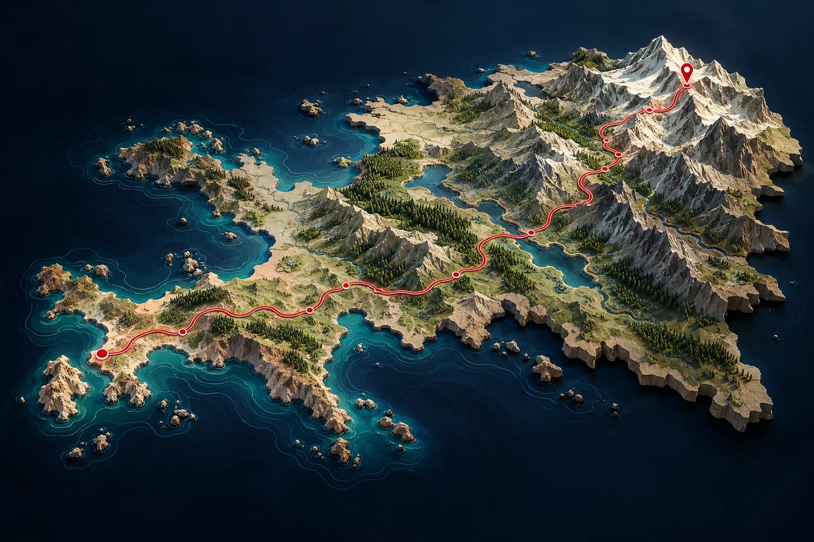
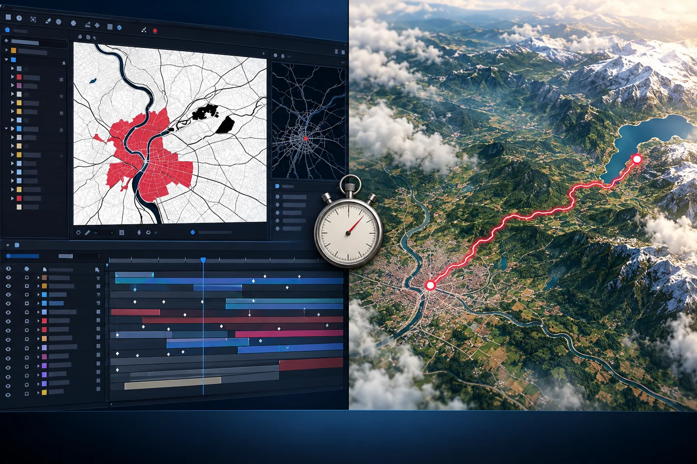
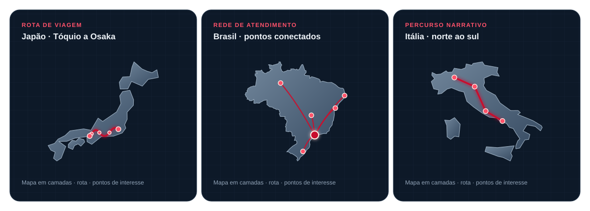

Uma rota aérea conectando Tóquio, Nagoya, Kyoto e Osaka, com paradas visíveis no mapa.
Método Mapa Viral · Curso prático
Transforme mapas em vídeos que fazem o olhar parar.
Aprenda um fluxo para sair de uma ideia e chegar a um vídeo cartográfico com roteiro, cenas, movimento e revisão — sem montar cada detalhe do zero na timeline.
Quero criar vídeos de mapas
R$ 97acesso ao curso
Para conteúdo e projetos comerciaisComece pelo material disponível

01 vídeode introdução
09 aulaspráticas em texto
06 skillspara diferentes mapas
Menos tempo preso à timeline
Uma ideia de mapa. Dois ritmos de produção.
Veja o contraste entre uma composição cheia de camadas no After Effects e um fluxo mais direto para chegar ao vídeo de mapa.

After Effects · exemplo do criador5 horas
Fluxo ensinado no método20 min
Comparação informada pelo criador para um exemplo de produção. O tempo pode variar conforme tema, ferramentas, duração e nível de refinamento do vídeo.
Na timeline tradicional, cada movimento pode trazer novas camadas, máscaras, pontos-chave e ajustes manuais.
Com uma sequência de trabalho organizada, você sabe o que decidir em cada etapa e concentra energia na história que o mapa precisa contar.
Do roteiro para a tela
Mapas com um caminho para seguir.
As skills partem de formatos que já fazem parte do curso: rotas, histórias de empresas e trajetos que ganham sentido quando vistos no território.

Pontos de atendimento e conexões distribuídos pelo território brasileiro.
Um percurso que conduz o olhar pelo território e organiza a narrativa por etapas.
Um recurso para conteúdo e trabalho
Mapas podem entrar em mais projetos do que você imagina.
Use o método para criar conteúdo próprio ou incluir vídeos cartográficos nas entregas que você já oferece.
Agências de marketing
Inclua mapas em campanhas, vídeos institucionais e conteúdos para clientes que precisam explicar presença ou expansão.
Agências de turismo
Apresente roteiros, destinos, conexões aéreas e experiências de viagem de um jeito visual.
Empresários e marcas
Mostre onde a empresa atende, como distribui, onde abriu unidades e para onde está crescendo.
Imobiliário e negócios locais
Contextualize bairros, acessos, pontos de interesse e a localização de novos empreendimentos.
Criadores de conteúdo
Transforme curiosidades geográficas, rankings e comparações em histórias visuais para redes sociais.
Freelancers e produtoras
Monte uma nova opção de serviço para apresentar a clientes que precisam visualizar lugares, rotas ou cobertura.
Uma possibilidade de faturamento: oferecer vídeos de mapas como serviço, cobrar por projeto ou acrescentá-los a um pacote de conteúdo. O curso ensina o processo de criação; conquistar clientes e definir preços depende da sua oferta e da sua execução.
Um processo que se repete
Do assunto ao vídeo, etapa por etapa.
Escolha o ponto central
Defina a pergunta, o lugar e a ideia que o espectador precisa levar.
Monte o roteiro visual
Selecione o formato e organize a sequência de cenas.
Crie e confira as cenas
Prepare os mapas, destaque os elementos e revise os dados geográficos.
Edite e publique
Una cenas, narração, som e legendas; assista ao arquivo final antes de publicar.
O curso por dentro
Você recebe o caminho e as ferramentas para começar.
- Entenda o fluxo de produção
- Monte sua caixa de ferramentas
- Escolha a skill certa para cada mapa
- Planeje vídeos para canais e negócios
- Defina a direção visual
- Gere e revise as cenas
- Prepare a narração e o som
- Monte e exporte o vídeo
- Corrija erros antes de publicar
Método Mapa Viral
Comece a planejar seu próximo vídeo de mapa.
Aprenda um fluxo organizado, escolha uma das seis skills e transforme um tema em uma sequência visual que você pode revisar, montar e adaptar ao seu projeto.
Acesso ao curso
R$ 97
1 vídeo de introdução · 9 aulas em texto · 6 skills
Quero acessar o métodoPagamento e acesso pela Kiwify. Confira as opções no checkout.
Antes de entrar
Perguntas que podem estar passando pela sua cabeça.
O curso já está inteiro em vídeo?
Ainda não. Nesta primeira versão, você recebe um vídeo de introdução, nove aulas práticas em texto e seis skills. Vídeos complementares serão adicionados depois.
Preciso saber usar After Effects?
Não. O método foi organizado para ensinar outro fluxo de criação de mapas em vídeo. As aulas mostram as etapas de roteiro, cenas, montagem e revisão.
O que são as seis skills?
São arquivos de instruções organizados por formato: narrativas e curiosidades, rankings, negócios, rotas e turismo, mapas urbanos e comparações territoriais.
Posso usar isso em projetos de clientes?
Sim. Os formatos do curso podem ser adaptados para projetos de marketing, turismo, empresas, imobiliário e outras áreas que precisem explicar lugares, trajetos ou cobertura.
Vou ganhar dinheiro depois do curso?
O método pode ajudar você a criar uma nova oferta de serviço ou ampliar seu portfólio. Faturamento depende de fatores como qualidade da entrega, preço, prospecção e demanda dos clientes.
Como acesso o material?
Depois de concluir a compra pela Kiwify, siga as instruções enviadas para acessar a área do curso e os materiais.
Seu próximo mapa pode virar vídeo
Troque horas de tentativa por um plano claro para criar.
Conheça o Método Mapa Viral por R$ 97.
Acessar o curso na Kiwify